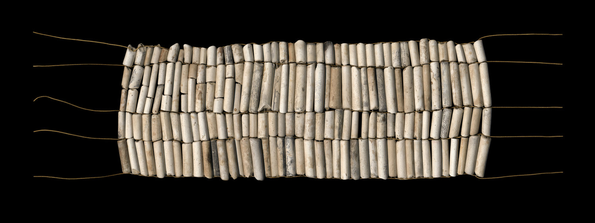
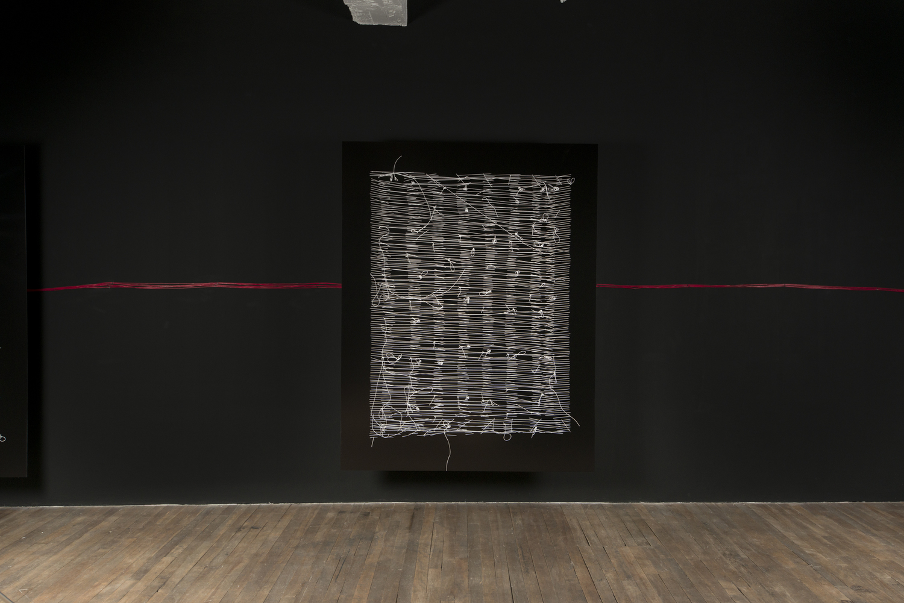
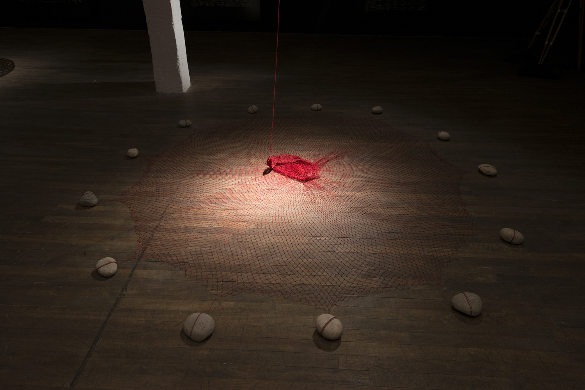
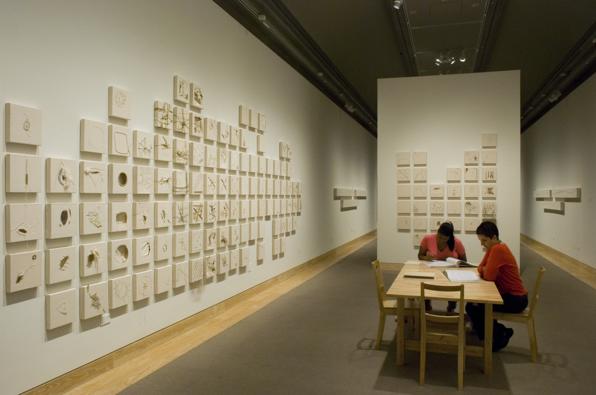

Nadia Myre, la parole authentique de l'histoire
Galadriel Avon
Baccalauréat en sciences politiques et philosophie | Université de Montréal
Mineure en histoire de l’art | Université du Québec à Montréal
L’engagement dans l’art contemporain : la politisation de l’identité
Au cœur de la seconde moitié du XXe siècle – et même avant –, l’art aspire à redéfinir son rapport à la société. Posant un nouveau regard sur le rôle qu’occupent les créateurs au sein de leur collectivité, il devient la plupart du temps un catalyseur d’utopies sociales. Les artistes contemporains, avant de simplement s’inscrire dans cette nouvelle mouvance, participent à la mettre sur pied et à la concrétiser. Ils entrent en contact avec leur contexte social ; leur travail y étant désormais enchâssé. De nouveaux modes participatifs naissent et, par la relation immédiate que les artistes cherchent à nouer avec leurs publics, l’art se politise puis décloisonne son rapport au monde.
Les pratiques artistiques contemporaines, par le dialogue continu qu’elles entretiennent avec leur communauté, deviennent engagées, voire militantes par moments. Si les horizons du domaine artistique s’ouvrent, la question des nouveaux modes d’expression, d’actualité dans l’histoire de l’art occidentale, appartient davantage aux « nouvelles voix », c’est-à-dire aux figures contemporaines des cultures dites « marginales » – plutôt marginalisées – comme celles des Premières Nations. Souvent invisibilisées des espaces officiels, les productions autochtones continuent de lutter pour leur reconnaissance,1 s’inscrivant ainsi avec force dans le tournant politique et engagé qui s’opère alors dans le domaine de l’art. En effet, dès lors qu’elles existent,2 elles revendiquent un nouvel espace dans le cadre culturel dominant, signe d’une reprise identitaire en construction. Elles revêtent souvent un haut degré de militance et de résistance ; elles sont multiples et cherchent, par la superposition de plusieurs procédés, à rendre visible la réactivation de cultures millénaires dans des contextes contemporains.
À cet égard, la production de l’artiste Algonquine Nadia Myre semble évocatrice : elle révèle avec intelligence toute la portée de l’engagement dans l’art contemporain québécois et canadien. L’aspect politique de son travail s’observe de multiples manières, les plus manifestes étant l’usage de techniques diversifiées qui réunissent tradition et modernité, le caractère identitaire dévoilé dans la blessure-cicatrice héritée de l’histoire, puis le tournant communautaire qu’elle insuffle dans plusieurs de ses œuvres. L’entreprise de réappropriation et de décolonisation proposée par la pratique de Myre, par sa portée sociale importante, l’engage tout autant qu’elle lui donne une sensibilité pour la matière, l’histoire et le vécu, qui ne sont pas sans revêtir un haut potentiel émancipatoire ouvrant un espace de négociation politique inédit.
Entre tradition et modernité : l’historicité comme motif artistique
S’illustrant par la pluralité des techniques qu’elle exploite, Myre propose un travail protéiforme. À travers sa démarche, l’artiste emploie des techniques traditionnelles – la broderie, le perlage, la reconstitution artisanale d’objets – et des techniques contemporaines – la photographie, la vidéo et l’installation –, un métissage faisant montre d’une capacité à la fois à actualiser et à défolkloriser l’art traditionnel autochtone .3 Si cette alliance

Figure 1. Nadia Myre. Indian Act. 2000-2002. Installation ; cadres, perles de verre, textes de lois. Projet collectif.
entre tradition et modernité laisse voir une hybridité plastique, elle revêt aussi une symbolique particulière quant au maillage identitaire des peuples des Premières Nations. C’est une affirmation politique que de nommer et de montrer la possibilité d’une coprésence des cultures et, pour Myre, cette prise de position passe tout autant par le choix des techniques utilisées que par celui des motifs représentés ; par la forme et par le fond. À ce titre, l’usage du perlage, comme elle le rend visible dans plusieurs de ses œuvres, donne à son travail une portée revendicatrice et émancipatoire tangible. Sa réactualisation d’une pratique à la fois traditionnelle et spirituelle lui permet de parler de son identité par la rencontre de deux mondes – le sien et le monde colonial – et,4 ainsi, de réitérer la présence des Autochtones dans l’Histoire. En effet, parce qu’il se frotte à la culture dominante, le geste de perler montre. Il constitue un effort pour révéler les traces et l’impact de l’héritage colonialiste et ouvre la voie à une reconstruction de soi. Il se faufile à travers les marques du récit historique et acquiert alors son potentiel d’affirmation ou de réaffirmation individuelle au sein du monde parce qu’il permet de revendiquer un nouvel espace culturel et politique.
Il arrive que l’Histoire déjà existante ou disponible s’avère non représentative au point qu’on veuille la réécrire […]. Cette réécriture ne peut être que subversive puisqu’elle se propose de renverser l’ordre des pouvoirs. Elle est donc éminemment politique.5
Son œuvre Indian Act est sans doute l’une des pièces qui fait le plus état de cette subversion, de ce désir de renverser la trame narrative officielle de l’histoire qui a contribué à mettre en marge et à effacer les peuples autochtones au Canada. La force du geste est centrale chez Myre : l’usage du perlage est

Figure 2. Nadia Myre. Code Switching. 2017. Impressions jet d’encre.
une manière de reproduire l’acte traditionnel des ancêtres et de créer avec eux une filiation dont l’importance est constamment soulignée dans sa démarche. De plus, si la notion de tradition semble déjà forte dans Indian Act,6 deux symboles s’ajoutent en son cœur et en décuplent la puissance. En effet, sa revisite de la Loi sur les Indiens, toujours en vigueur à ce jour, illustre bien l’engagement politique de son travail. Perle après perle, Myre recouvre tranquillement les cinq premiers chapitres du texte de loi jusqu’à le faire partiellement disparaître, montrant que ce dernier n’aura pas préséance sur l’héritage culturel autochtone. La technique traditionnelle propose ainsi une relecture et une réécriture de l’histoire, puis une réappropriation de la blessure qu’elle sous-tend.7 Ce travail est d’autant plus fort qu’il révèle le caractère sacré d’une telle entreprise derrière laquelle la répétition du geste a une dimension rituelle et rédemptrice,8 encore une fois fortement politique.
Par ailleurs, il ne faut pas omettre le poids sémantique de l’emploi des perles comme matériau artistique. Outre leur dimension traditionnelle, elles constituent un symbole culturel, politique et économique important puisqu’elles renvoient aux ceintures wampums qui, historiquement réalisées à partir de coquilles de palourdes, servaient à sceller des ententes économiques et des alliances chez les Premières Nations.9 Dans Indian Act, leur emploi sur le texte de loi n’est donc en rien banal : il rend compte du système colonial mis en place pour assimiler les cultures autochtones, réduisant à néant leurs cosmogonies politiques. La reprise d’une tradition comme pied de nez à cette structure de domination permet à Myre de se distancer du passé colonialiste et de se positionner vis-à-vis de lui, tout en réactualisant sa propre identité.
Dans une perspective archéologique, et pour proposer un regard différent sur la tradition, Myre en viendra aussi à utiliser des fragments de pipes à tabac en argile trouvés au bord de la Tamise, à Londres. D’abord objet culturel, ce matériau, qu’elle emploie notamment dans son œuvre Code Switching, a, à travers l’histoire, revêtu un caractère assimilatoire important. Initialement fabriquées de manière artisanale, les pipes sont rapidement devenues un objet de reprise culturelle par le régime colonial. Ces vestiges matériels sont les signes tangibles de l’une des premières tentatives britanniques d’établir un rapport de dépendance avec les Autochtones : la pipe à tabac occidentalisée suppléant la pipe traditionnelle, elle devient le symbole d’une transition vers un système capitaliste servant à fragiliser l’économie autochtone.10 Une fois de plus, le matériau n’est pas sans haute portée sémantique. Les fragments utilisés par Myre pour recréer des offrandes cérémoniales, tels des wampums, posent une réflexion sur la colonisation tout comme ils marquent l’importance des objets culturels employés dans les cérémonies traditionnelles. Étant photographiées et imprimées en grands formats au jet d’encre, les reconstitutions d’objets que donne à voir le projet Code Switching acquièrent en contexte d’exposition une dimension magnifiée. Myre joue ainsi avec les codes muséaux en empruntant des motifs issus de l’artisanat, de l’art dit majeur et des expositions d’histoire naturelle et de type anthropologique ; elle en vient à remettre en question les hiérarchies établies de l’histoire de l’art tout en permettant à ses traditions de se tailler une place dans les institutions artistiques officielles.


Figure 3. Nadia Myre. Oraison/Orison. 2014. Impressions jet d’encre, filet rouge, pierres ficelées, panier de vannerie. Série ; impressions 43 x 33 pouces, édition de 7.
Pour l’artiste comme pour les membres des Premières Nations, l’actualisation de motifs identitaires et la réappropriation d’objets culturels, ici dans une perspective artistique, servent de tremplin et de catalyseurs à la définition d’un soi dans le monde, ce qui ouvre ultimement la voie au renversement de l’ordre de domination établi par la colonisation. Ces allers-retours entre passé et présent, rendus visibles par la revitalisation de modes d’expression traditionnels et leur croisement avec des techniques contemporaines, sont une manière de signaler la coprésence possible des cultures autochtones et allochtones ; d’ouvrir un dialogue entre leurs iconographies respectives tout en faisant reconnaître les traditions ancestrales des Premières Nations et la sacralité qui en découle.
Reconstruire l’identité en montrant la blessure
D’abord personnelle, la blessure qu’expose le travail de Myre est aussi collective. S’il apparaît important pour les Autochtones de la définir pour la suite du monde, c’est précisément parce que c’est une étape nécessaire à la refonte de leur identité. Ils ne cherchent pas à s’abstraire des cicatrices du passé, mais plutôt à les transformer en vecteurs de force afin de réclamer une nouvelle agentivité. Cette revendication d’un espace culturel et historique dépourvu de l’omniprésence des cultures occidentales dominantes est toutefois d’une complexité analogue à celle de refonder son identité souveraine au moment même où d’autres déterminent les règles du jeu, car même en l’absence d’une oppression directe se trouve souvent une structure de domination cachée. Dans cette perspective, il faut être sensible à la démarcation complexe du vocable « autochtone » : « Pour [qu’il] ait une fonction significative, il est essentiel qu’il renvoie aux notions de particularisme culturel, de dualité et d’hybridité, et qu’il offre la possibilité d’une auto-identification volontaire ». 11 Ainsi, une affiliation culturelle doit d’abord passer par un geste conscient mais, aussi, nécessairement, par la remise en question de l’histoire officielle.
Dans ce contexte, le travail de Myre sort du lot : elle revendique à la fois ses racines autochtones et recourt à des stratégies artistiques – et politiques – qui donnent à son art une légitimité pouvant se tenir hors de ses origines, même si elle ne s’en distancie pas. Ses œuvres existent donc pour elles-mêmes, non sans leur identité autochtone, mais au-delà ,12 et leurs mécanismes font état de cet écart avec d’autant plus d’aplomb : elles ont une force esthétique ; elles résistent. On peut penser à son œuvre Oraison/Orison qui reflète bien que l’envers du récit collectif est tout aussi important que sa trame narrative officielle, sinon plus. Effectivement, cette série de plusieurs impressions au jet d’encre présente le dos des tableaux perlés de l’œuvre Indian Act, explorée plus tôt. Si la démarche de cette dernière réitérait le geste artisanal autochtone pour relire et réécrire le texte de loi,13 en montrer l’envers exhibe plutôt les coutures laissées par le perlage, donne à voir les cassures de fils, les nœuds et les reprises comme autant de traces physiques et matérielles des efforts soutenus déployés pour revenir sur le passé afin de souligner l’effacement duquel les peuples autochtones ont été la cible. Cette stratégie révèle que leur reconstruction doit inévitablement passer par une exposition aux cicatrices collectives.
En contexte muséal, cette série de photographies que constitue Oraison/Orison se joint à un panier de rotin rempli de tabac et à un filet rouge accroché au plafond puis retenu au sol par des pierres. Le filage, animé par un moteur et bougeant ainsi au rythme des respirations, rappelle l’effort humain exploré en tentes de sudation, un rituel autochtone important. L’installation qui se déploie dans le même environnement que les spectateurs les force à interroger leur propre regard sur l’Autre, sur l’Histoire et sur l’inconfort que cette jonction entre la blessure d’autrui et leur corps peut provoquer. Par ces regards contrastés qui se croisent, Myre permet aux Autochtones et à un nouveau récit d’exister. Ils sont dorénavant investis de pouvoir et leur identité instaure une force à la fois artistique et politique.14
Retracer ces cicatrices en leur donnant une constitution matérielle leur permet aussi de prendre une forme très organique, comme dans The Scar Project qui, laissant libre cours à l’expression des violences vécues, propose une réflexion sur l’intériorisation de la blessure. Celle-ci devient un concept souple qui se transmet par le geste et qui possède un potentiel guérisseur, supportant l’artiste dans sa quête pour « retrouver ses racines, pour renouer le lien qui faisait se suivre les générations et se perpétuer la Culture. [Le geste] permet le passage dans l’autre temps, l’illo tempore, pour redécouvrir [ce lien], l’explorer, se l’approprier, tout en demeurant dans le présent. » La blessure s’exprime alors par sa reconstitution méditative,15 par ces allers-retours dans le temps pour mieux la comprendre qui servent finalement à mieux l’apaiser.
Chez Myre, tenter de se reconstruire est une démarche à la fois très intérieure et très politique qui constitue une forme de résilience. Émancipatrice, elle transcende les clivages culturels au profit de l’immanence d’une sensibilité, d’une humanité : « la possibilité de faire de Soi un agent de changement dépasse largement le cadre d’une lutte définie pour entrer dans celui d’un idéal d’humanité. [C’est] une blessure humaine avant tout. Et humaine après tout. » Ses œuvres permettent la reprise d’un espace culturel et identitaire à réédifier.16 En travaillant avec les constituants de cette blessure historique, l’artiste participe à son démantèlement par la mise en œuvre d’une nouvelle agentivité.
La rencontre, un moyen de collectiviser la guérison
Ultimement, il paraît intéressant de sonder la dimension participative et collective du travail de Myre. En effet, les techniques traditionnelles employées contribuent à réaffirmer une identité commune, mais également à faire se rencontrer les cicatrices portées par divers agents. Cette stratégie processuelle ouvre la porte à un partage rédempteur et, par le fait même, donne la possibilité aux non-artistes de devenir acteurs et contributeurs d’un changement de paradigme. En sollicitant l’activité d’autrui, il y a réactivation de la mémoire collective et, ainsi, résistance contre l’amnésie de l’histoire. Cette stratégie permet aux Autochtones de partager leur propre récit dans lequel « [ils] signent une sorte de territorialité imaginaire, où le spirituel peut aussi rejoindre le politique et devenir le véhicule de l’identité. » C’est donc notamment en donnant la parole à ceux qui ont vécu des blessures similaires aux siennes que Myre parvient à hisser sa réflexion personnelle au rang du collectif et qu’elle produit,17 par le fait même, un modèle de guérison.

Figure 4. Nadia Myre. The Scar Project. 2005-2013. Installation ; toiles, fils, cordes. Projet collectif.
Si l’on a parlé, plus tôt, de la technique du perlage utilisée dans son œuvre Indian Act, il est aussi primordial de voir en ce projet une dimension plus globale : une entreprise communautaire. Recouvrir un texte de loi est un geste politique fort, et la formule traditionnelle employée pour y parvenir met en relief la prépondérance des pratiques artisanales autochtones dans leur histoire et dans la défense de leur avenir .18 De plus, la réitération du geste ancestral du perlage entraîne la dissipation de la blessure causée par cette loi au moyen d’un acte de spiritualisation. Myre favorise une approche dialogique par laquelle la communauté, créée par les individus rassemblés autour de l’activité du perlage, ouvre la porte à l’expression, chez chacun, de leurs expériences souvent douloureuses et, éventuellement, à une guérison. Le caractère relationnel du projet permet la verbalisation de la charge portée par les membres des Premières Nations à l’égard du projet assimilatoire dont ils ont souffert. Cet échange revêt une portée symbolique, spirituelle et sacrée ; « comme l’a bien noté l’artiste et commissaire David Garneau : “[…] It is an exercise of the belief that tiny, personal, repetitive gestures have the power of prayer.” » 19 Il y a à la fois un travail solitaire et un travail de mise en commun dans l’incantation rituelle qu’engage Nadia Myre.20 C’est une invitation à une introspection individuelle, mais également à une remise en question sociale qui tend à interroger les paradigmes coloniaux et postcoloniaux. La discussion concerne ainsi la blessure que porte chacun tout en s’inscrivant dans une mobilisation collective. Il faut comprendre, en tant que communauté, ce que l’on a vécu et ce que l’on vit encore.
The Scar Project proposait une autre vue sur la collectivisation du processus de guérison des nations autochtones. Participatif, ce projet cherchait à engendrer la matérialisation de cicatrices : « Myre [y] explorait les thèmes de la douleur, de la blessure et de la guérison à travers l’image de la cicatrice, en invitant les visiteurs à “coudre leurs plaies” métaphoriquement sur des toiles. […] [Elle] est devenue le catalyseur de la souffrance de plusieurs centaines de personnes. » 21 Si cette démarche ouvre la porte à une sorte de méditation intérieure, c’est une fois de plus le processus collectif qui engage un dialogue fécond sur les blessures de soi et de l’Autre. La nécessité de réfléchir à l’expression, tant conceptuelle que visuelle, de ces cicatrices reflète simultanément une délicatesse et une grande violence intériorisée. La collecte de ces cicatrices – et leur regroupement dans un accrochage en mosaïque – permet à l’observateur de revisiter ses propres blessures. Ainsi, ce qui donne un nouveau souffle à l’œuvre n’est pas seulement de participer de manière commune au projet, mais aussi de retrouver sa cicatrice parmi celles des autres. Myre multiplie donc les traces physiques, initialement uniques, de manière à ce qu’elles « s’associent à des blessures, invisibles celles-ci, survenant au fur et à mesure d’une prise de conscience de la place du Soi au monde et des douleurs engendrées par les dynamiques relationnelles toujours plus inextricables ».22 La dimension communautaire de ses œuvres lui permet de rassembler les mémoires et les expériences de chacun en une sorte de courtepointe vivante, chargée.
En somme, la valeur du processus participatif se dévoile dans la communion mise en œuvre entre soi et les autres. La démarche marque le commencement d’une guérison solidaire, à mesure que les blessures se côtoient et sont dévoilées au grand jour. En dépit de la difficulté à surmonter les répercussions du passé colonial, il y a, dans la réappropriation du geste artistique, un élan sensible de réclamation,23 de résilience et de résistance. Chez Myre, le processus compose l’œuvre, et cette restitution des affects donne à son travail une force sur le plan humain comme sur le plan politique : ses œuvres sont des appels.
Le travail de Myre, politique et sensible, à la croisée du passé et de l’avenir
Enfin, l’œuvre riche et foisonnante de Nadia Myre est sans conteste engagée. Visible dans toutes ses œuvres, le couplage entre les techniques traditionnelles et contemporaines donne à l’art autochtone une crédibilité et une légitimité véritables, dans un monde artistique encore occidentalisé où l’espace octroyé aux cultures marginalisées est toujours teinté par la présence d’une culture dominante. En puisant dans son patrimoine culturel, en ayant recours à des références historiques et en composant en toute cohérence des séries d’œuvres qui font place à une dimension politique, Myre ouvre « un autre lieu de négociation de l’identité, celui de la perception des codes visuels, laquelle s’entend aussi bien dans le sens de la circulation des codes que de leur récupération. » 24 Les stratégies qu’elle déploie témoignent d’une envie de revendiquer un pouvoir d’action et de renouer avec des racines désormais représentatives, ancrées. La tradition, ainsi revitalisée, lui permet de donner la parole à ses ancêtres, explorant la filiation sans se dissocier pour autant du contexte contemporain dans lequel elle s’ancre. C’est finalement en montrant les dessous du paradigme colonial et en réécrivant l’histoire qu’elle arrive à rendre visible l’invisible. Par le tournant participatif et communautaire de ses œuvres, elle généralise les expériences afin de mieux les comprendre et d’engendrer un processus de guérison. Ces blessures peuvent être vécues à plusieurs : par divers moyens, Myre transfigure la souffrance en un sujet de méditation propice à la réappropriation de soi. Ainsi, la portée sociale de son travail est indéniable et s’ancre dans un processus de décolonisation politique éminemment engagé : Myre, en s’ancrant dans sa communauté, réussit à redéfinir les perceptions collectives sur le monde et l’Histoire. Sa démarche, en somme, est une force agissante.
NOTES DE FIN
[1] UZEL, Jean-Philippe. « Caché sous nos yeux. L’art contemporain
autochtone sur la scène internationale », Inter, no. 122, 2016, p.
27.
[2] BACON, Joséphine. « Uapaki. Pour demain ». Marie-Ève CHARRON et Thérèse
ST-GELAIS (dir.), Le désordre des choses – L’art et l’épreuve du
politique,
Les éditions esse, Montréal, 2019, p. 67.
[3] LEBLOND, Jean-Claude. « Un contexte culturel différent », Vie des
arts,
vol. 34, no. 137, 1989, p. 33.
[4] FRANCO, Marie-Charlotte. « D’Indigena à Sakahàn. Éléments de réflexion
pour une affirmation autochtone dans l’art contemporain. », Inter,
no. 122,
2016, p. 30.
[5] BOUCHARD, Jacqueline. op. cit., p. 153-154.
[6] UZEL, Jean-Philippe. « Faire, défaire et refaire: la décolonisation chez
Nadia Myre », Spirale, no. 260, 2017, p. 15.
[7] UZEL, Jean-Philippe. « Faire, défaire et refaire: la décolonisation chez
Nadia Myre », op. cit., p. 15-16.
[8] CHARCE, Chloë. « Entre spirituel et politique, Nadia Myre balise son
territoire », ETC, no. 96, 2012, p. 26.
[9] UZEL, Jean-Philippe. « L’autochtonie dans l’art actuel québécois. Une
question partagée », Globe, vol. 17, no. 1, 2014, p. 38.
[10] MYRE, Nadia. « Nadia Myre – Code Switching », [en ligne],
[http://www.nadiamyre.net/#/code-switching-2017-solo-exhibition/], (consulté
le 27 novembre 2019).
[11] LALONDE, Christine. « Introduction: au carrefour de l’indigénéité, de
la mondialisation et de l’art contemporain », Greg H. HILL et Christine
LALONDE (dir.), Sahakàn. Art indigène international, catalogue
d’exposition,
Ottawa, Musée des beaux-arts du Canada, p.15.
[12] UZEL, Jean-Philippe. « L’autochtonie dans l’art actuel québécois. Une
question partagée », op. cit., p. 49.
[13] UZEL, Jean-Philippe. « Faire, défaire et refaire: la décolonisation
chez Nadia Myre », op. cit., p. 16.
[14] BOUCHARD, Jacqueline. op. cit., p. 149.
[15] LEBLOND, Jean-Claude. op. cit., p. 33.
[16] BOUCHARD, Anne-Marie. « Nadia Myre, The Scar Project et Beat Nation »,
ETC MEDIA, no. 101, 2014, p. 43.
[17] CHARCE, Chloë. op. cit. p. 26.
[18] UZEL, Jean-Philippe. « L’autochtonie dans l’art actuel québécois. Une
question partagée », op. cit., p. 49.
[19] UZEL, Jean-Philippe. « L’autochtonie dans l’art actuel québécois. Une
question partagée », op. cit., p. 39.
[20] UZEL, Jean-Philippe. « L’autochtonie dans l’art actuel québécois. Une
question partagée », op. cit., p. 39.
[21] CHARCE, Chloë. op. cit. p. 26.
[22] BOUCHARD, Anne-Marie. op. cit., p. 41.
[23] MONNET, Caroline. « Autodétermination et modernité partagée »,
Marie-Ève CHARRON et Thérèse ST-GELAIS (dir.), Le désordre des choses –
L’art et l’épreuve du politique, Les éditions esse, Montréal, 2019,
p. 146.
[24] BOUCHARD, Jacqueline. « Art et pouvoir. Redessine-moi mon histoire et
je te dirai qui je suis », Anthropologie et Sociétés, vol. 16, no. 3,
1992,
p. 147-158.